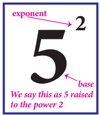
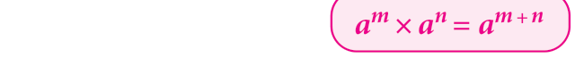
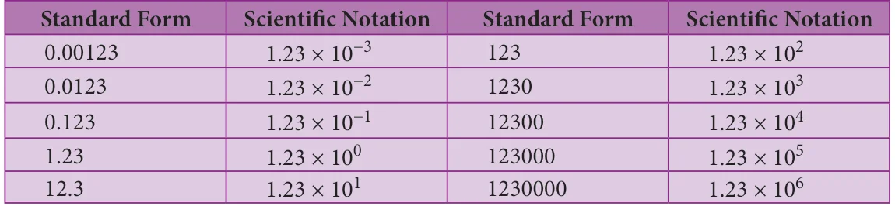

<!DOCTYPE html>
<html lang="en">
<head>
<meta charset="UTF-8">
<meta name="viewport" content="width=device-width,initial-scale=1">
<title>1.9 Exponents and Powers — Numbers</title>
<meta name="description" content="Class 8 Mathematics · Numbers · 1.9 Exponents and Powers">
<link rel="icon" href="data:image/svg+xml,<svg xmlns='http://www.w3.org/2000/svg' viewBox='0 0 100 100'><text y='.9em' font-size='90'>📘</text></svg>">
<link rel="stylesheet" href="../../../assets/book.css">
<link rel="stylesheet" href="https://cdn.jsdelivr.net/npm/katex@0.16.11/dist/katex.min.css" crossorigin="anonymous">
</head>
<body>
<header class="topbar">
<div class="topbar-in">
 <div class="crumb">
 <span class="c1"><a href="../../../index.html">Library</a> · <a href="../../index.html">Class 8 Mathematics</a></span>
 <span class="c2">Numbers · 1.9 Exponents and Powers</span>
 </div>
 <a class="tb-btn" data-nav="prev" href="../../01-numbers/13-exercise-1.5/index.html" title="Exercise 1.5">←</a>
 <details class="drawer"><summary class="tb-btn" title="Sections in this chapter">☰</summary>
<div class="drawer-panel"><div class="dh">Numbers</div><a href="../01-chapter-opener/index.html">Chapter opener; 1.1 Introduction</a><a href="../02-rational-numbers-1.2/index.html">1.2 Rational Numbers</a><a href="../03-exercise-1.1/index.html">Exercise 1.1</a><a href="../04-basic-arithmetic-operations-on-rational-numbers-1.3/index.html">1.3 Basic Arithmetic Operations on Rational Numbers</a><a href="../05-word-problems-on-the-basic-operations-1.4/index.html">1.4 Word Problems on the basic operations</a><a href="../06-exercise-1.2/index.html">Exercise 1.2</a><a href="../07-properties-of-rational-numbers-1.5/index.html">1.5 Properties of Rational Numbers</a><a href="../08-exercise-1.3/index.html">Exercise 1.3</a><a href="../09-introduction-to-square-numbers-1.6/index.html">1.6 Introduction to Square Numbers</a><a href="../10-square-root-1.7/index.html">1.7 Square Root</a><a href="../11-exercise-1.4/index.html">Exercise 1.4</a><a href="../12-cubes-and-cube-roots-1.8/index.html">1.8 Cubes and Cube Roots</a><a href="../13-exercise-1.5/index.html">Exercise 1.5</a><a href="../14-exponents-and-powers-1.9/index.html" aria-current="page">1.9 Exponents and Powers</a><a href="../15-exercise-1.6/index.html">Exercise 1.6</a><a href="../16-exercise-1.7/index.html">Exercise 1.7</a><a href="../17-summary/index.html">SUMMARY</a></div></details>
 <a class="tb-btn" data-nav="next" href="../../01-numbers/15-exercise-1.6/index.html" title="Exercise 1.6">→</a>
 <button class="tb-btn" data-theme-toggle title="Toggle light / dark" aria-label="Toggle light or dark theme">◐</button>
</div>
<div class="progress"><span style="width:13.0%"></span></div>
</header>
<main class="wrap">
<div class="sec-head">
 <p class="eyebrow"><a href="../index.html">Chapter 1 · Numbers</a></p>
 <h1>1.9 Exponents and Powers</h1>
 <p class="sec-meta">Textbook pages 39–44 · 8 figures</p>
</div>
<article class="prose">
<p>We know how to express some numbers as squares and cubes. For</p>
<figure class="fig side-fig"></figure>
<p>example, we write \(5^2\) for 25 and \(5^3\) for 125. In general terms, an expression that represents repeated multiplication of the same factor is called a power. The number 5 is called the base and the number 2 is called the exponent (more often called as power). The exponent corresponds to the number of times the base is used as a factor.</p>
<h3 id="s-1-9-1-powers-with-positive-exponents">1.9.1 Powers with positive exponents</h3>
<p>Value of powers given by positive whole number exponents quite often increase rapidly. Observe the following example:</p>
<div class="mathblock"><p>\(2^1 = 2\)</p></div>
<div class="mathblock"><p>\(2^2 = 2 \times 2 = 4\)</p></div>
<div class="mathblock"><p>\(2^3 = 2 \times 2 \times 2 = 8\)</p></div>
<div class="mathblock"><p>\(2^4 = 2 \times 2 \times 2 \times 2 = 16\)</p></div>
<div class="mathblock"><p>\(2^5 = 2 \times 2 \times 2 \times 2 \times 2 = 32\)</p></div>
<div class="mathblock"><p>\(2^6 = 2 \times 2 \times 2 \times 2 \times 2 \times 2 = 64\)</p></div>
<div class="mathblock"><p>\(2^7 = 2 \times 2 \times 2 \times 2 \times 2 \times 2 \times 2 = 128\)</p></div>
<div class="mathblock"><p>\(2^8 = 2 \times 2 \times 2 \times 2 \times 2 \times 2 \times 2 \times 2 = 256\)</p></div>
<div class="mathblock"><p>\(2^9 = 2 \times 2 \times 2 \times 2 \times 2 \times 2 \times 2 \times 2 \times 2 = 512\)</p></div>
<div class="mathblock"><p>\(2^{10} = 2 \times 2 \times 2 \times 2 \times 2 \times 2 \times 2 \times 2 \times 2 \times 2 = 1024\)</p></div>
<p>At this rate of increase, what do you think \(2^{100}\) will be?</p>
<div class="mathblock"><p>In fact, \(2^{100} = 1267650600228229401496703205376\)</p></div>
<p>Thus, we understand that the positive exponential notation with positive power could be useful when we come across with large numbers.</p>
<h3 id="s-1-9-2-powers-with-zero-and-negative-exponents">1.9.2 Powers with zero and negative exponents</h3>
<p>Observe this pattern: \(2^{5}= 32\) Starting from the beginning, what happens in the successive steps? We find that the result is half of that of the previous step. So, what can we say about</p>
<div class="mathblock"><p>\(2^4 = 16\)</p></div>
<p>\(2^0\)? If we prepare a table like this for \(3^5\), \(3^4\), \(3^3\), and so on what will it tell us \(2^{3}= 8\) about \(3^{0}\)? We can use the same process as in this pattern, to conclude that any \(2^{2}= 4\) non-zero number raised to the zero exponent must result in 1. Thus,</p>
<div class="mathblock"><p>\(2^1 = 2\). Also, \(a^0 = 1\), where \(a \ne 0\)</p><p>\(2^0 =\) ?</p></div>
<p>Let us see what happens if we extend the above pattern further downward.</p>
<p>As before, starting from the beginning, in the successive steps, we find that \(2^{3}= 8\) the result is half of that of the previous step. Since \(2^{0} = 1\), the next step is \(2^{-1}\), \(2^{2}= 4\) whose value is the previous step's value 1, divided by 2, that is \(\frac{1}{2}\) . Next is \(2^{-2}\), \(2^{1}= 2\)</p>
<p>which is the same as \(\frac{1}{2}\) divided by 2, that is \(\frac{1}{4}\) and so on. Thus, \(2^0 = 1\)</p>
<div class="mathblock"><p>\(2^{-1} = \frac{1}{2}\)</p></div>
<p>In general, \(a - ^{m} = \frac{1}{am}\) , where m is an integer \(2 - 2 = \frac{1}{4}\)</p>
<div class="mathblock"><p>\(2 = \frac{1}{8}\)</p></div>
<h3 id="s-1-9-3-expanded-form-of-numbers-using-exponents">1.9.3 Expanded form of numbers using exponents</h3>
<p>In the lower classes, we have learnt how to write a whole number in the expanded form.</p>
<p>For example, \(5832 =\) 5´1000 + 8´100 + 3´10 + 2´1</p>
<p>\(= 5´10^{3}+ 8´10^{2}+ 3´10^{1}+ 2\) (when we use exponential notation).</p>
<p>What shall we do if we get decimal places? Powers of 10 with negative exponents come to our rescue! Thus, \(58.32 = 50 + 8 + \frac{3}{10} + \frac{2}{100}\)</p>
<div class="mathblock"><p>\(= 5 \times 10 + 8 \times 1 + 3 \times \frac{1}{10} + 2 \times \frac{1}{100}\)</p></div>
<div class="mathblock"><p>\(= 5 \times 10^{1} + 8 \times 10^{0} + 3 \times 10^{-1} + 2 \times 10^{-2}\)</p></div>
<div class="callout"><p class="callout-title">Try these</p>
<p>Expand the following numbers using exponents: 1. 8120 &emsp; 2. 20305 &emsp; 3. 3652.01 &emsp; 4. 9426.521</p>
</div>
<h3 id="s-1-9-4-laws-of-exponents">1.9.4 Laws of Exponents</h3>
<ul>
<li>Laws of exponents arise out of certain basic ideas. A positive exponent of a number indicate how many times we use that number in a multiplication whereas a negative exponent suggests us how many times we use that number in a division, since the opposite of multiplying is dividing.</li>
<li>Product law According to this law, when multiplying two powers that have the same base, we can add the exponents. That is,</li>
</ul>
<figure class="fig"></figure>
<p>where a (a \(\ne 0)\), m, n are integers. Note that the base should be the same in both the quantities.</p>
<p>Examples:</p>
<ol type="a">
<li>\(2^{3} \times 2^{2} = 2^{5}by\) law(meaning 8´4 \(= 32\) and note that it is not \(2^{3}´^{2}\) )</li>
</ol>
<div class="mathblock"><p>\(- 4 - 3\) \(-4+( - 3) - 7\)</p></div>
<p>\(-2 \times -\) ( \(2) =\) \(-2\) by law and so = \(-2\)</p>
<ol type="a">
<li>(or)</li>
</ol>
<p>\(- 4 - 3 1 1 1 1 1 - 7\)</p>
<div class="mathblock"><p>\(-2 \times -\) ( \(2) =\times==_{+}==( - 2)\) \(-2\) \(-2\) \(-2 \times -\) ( 2) \(-2\) \(-2\)</p></div>
<p>\(3 - 3 3 - 3 0\)</p>
<ol type="a">
<li>\(-5 \times -\) ( \(5) =( - 5)\) by law and so \(=( - 5) =1\)</li>
</ol>
<ul>
<li>Quotient law</li>
</ul>
<p>According to this law, when dividing two powers that have the same base we can subtract the exponents. That is,</p>
<figure class="fig"></figure>
<p>where a (a \(^{1} 0)\), m, n are integers. Note that the base should be the same in both the quantities. How does it work? Study the following examples.</p>
<p>Examples:</p>
<p>( 3)( 3) by lawand ( 3) 27 ( 3) (or)</p>
<p>5 ( 3) 5 2 5 2 3</p>
<ol type="a">
<li>( 3) ( 3) ( 3) ( 3)</li>
</ol>
<p>( 3) (or)</p>
<div class="mathblock"><p>\(\frac{(3)}{(3)2}\) ( 3) ( 3)</p></div>
<p>( 3) ( 3) ( 3) ( 3) ( 3)( 3) ( 3) ( 3) ( 3)</p>
<p>(( \(- - 7)7)^{10098} =\) \(-7^{100} - ^{98}\) by law and \(-7^{2} = 49\)</p>
<ol type="a">
<li>(or)</li>
</ol>
<p>(( \(- - 7)7)^{10098} =\) (( \(- - 7)7) \times \times\) (( \(- - 7)7) \times \times\) (( \(- - 7)7) \times \times ...100\) times... 98 times = \(-7 \times\) \(-7 = 49\)</p>
<ul>
<li>Power law According to this law, when raising a power to another power, we can just multiply the exponents.</li>
</ul>
<figure class="fig"></figure>
<p>Examples:</p>
<p>[(-2) ] \(= (-2)\) by law and(-2) \(= 64\)</p>
<div class="mathblock"><p>\(3 \times 2\)</p></div>
<p>(or)</p>
<div class="mathblock"><p>[(-2) ] \(= [(-2) \times (-2) \times (-2)] = [-8] = 64\)</p></div>
<div class="callout"><p class="callout-title">Try these</p>
<p>Verify the following rules (as we did above). Here, a,b are non-zero integers and m, n are any integers.</p>
<ol>
<li>Product of same powers to power of product rule: \(a \times b =\) (ab)</li>
<li>Quotient of same powers to power of quotient rule: \(\frac{aa}{bmb} =\)  </li>
<li>Zero exponent rule: \(a = 1\).</li>
</ol>
</div>
<h4 class="callout-h" id="s-example-1-36">Example 1.36</h4>
<p>Find the value of (i) \(4 - ^{3}\) (ii) \(\frac{1}{2 - 3}\) (iii) \(-2^{5} \times\) \(-2 - 3\) (iv) \(\frac{3}{3 - 2}\)</p>
<h4 class="callout-h" id="s-solution">Solution:</h4>
<p>\(-1 1 1\)</p>
<div class="mathblock"><p>\(4 4 \times 4 \times 4 64 \frac{1}{23}\)</p></div>
<ol type="a">
<li>\(4 == =\) (ii) 2 2 2 2 8</li>
<li>( 2) ( 2) ( 2) ( 2) 2 2 4 (iv) \(\frac{3}{3-2} = 3 \times 3 = 9 \times 9 = 81\)</li>
</ol>
<h4 class="callout-h" id="s-example-1-37">Example 1.37</h4>
<p>Simplify and write the answer in exponential form:</p>
<ol type="a">
<li>\((3^{5} \div 3^{8})^{5} \times 3 - ^{5}\) (ii) \(-3^{4} \times\)  \(\frac{5}{3}\) </li>
</ol>
<h4 class="callout-h" id="s-solution">Solution:</h4>
<p>5 5 5 58 5 5 3 5 5 35 5 15 5 155 20</p>
<ol type="a">
<li>\(\frac{3}{38}\)   3  (3 ) 3 (3 ) 3 3 3 3 3 3 3</li>
<li>3  \(\frac{545}{334}\)   3  5</li>
</ol>
<p>4  4 4 4</p>
<h4 class="callout-h" id="s-example-1-38">Example 1.38</h4>
<p>Find x so that \(-7 \times\) \(-7 =( - 7)\)</p>
<div class="mathblock"><p>x+2 5 10</p></div>
<h4 class="callout-h" id="s-solution">Solution:</h4>
<div class="mathblock"><p>x+2 5 10</p><p>(-7) ´(-7) =(-7)</p></div>
<p>x25 10</p>
<p>Since the bases are equal, we equate the exponents to get \(x + 7 = 10\), so \(x = 10 - 7 = 3\).</p>
<h3 id="s-1-9-5-standard-form-and-scientific-notation">1.9.5 Standard Form and Scientific Notation</h3>
<p>Standard form of a number is just the number as we normally write it. We use expanded notation to show the value of each digit. That is, it is exhibited as a sum of each digit duly multiplied by its matching place value (like ones, tens, hundreds etc.,). For example, 195 is in standard form. It can be expanded as \(195 = 1 \times 100 + 9 \times 10 + 5 \times 1\).</p>
<p>Astronomers, biologists, engineers, physicists and many others come across quantities whose measures require very small or very large numbers. If they write the numbers in standard form, it may not help us to understand or make computations easily. Scientific notation is a way to make these numbers easier to work with.</p>
<p>To write in scientific notation, follow the form \(S \times 10^{a}\), where S is a number (integer or integer with decimal) between 1 and 10, but not 10 itself, and <em>a</em> is a positive or negative integer. Thus, a number in scientific notation is written as the product of a number (integer or integer with decimal) and a power of 10. We move the decimal place forward or backward until we have a number from 1 to 9. Then, we add a power of ten that tells how many places you moved the decimal forward or backward.</p>
<p>Examples:</p>
<figure class="fig table-fig wide"></figure>
<p>Some more examples:</p>
<ol type="a">
<li>The diameter of the earth is 12756000 miles. This can be easily written in scientific form as \(1.2756 \times 10^{7}\) miles.</li>
<li>The volume of Jupiter is about 143300000000000 km³. This can be easily written in scientific form as \(1.433 \times 10^{14}\) km³.</li>
<li>The size of a bacterium is 0.00000085 mm. This can be easily written in scientific form as \(8.5 \times 10^{-7}\) mm.</li>
</ol>
<figure class="fig wide"></figure>
<h4 class="callout-h" id="s-example-1-39">Example 1.39</h4>
<p>Combine the scientific notations: (i) \((7 \times 10^{2})(5.2 \times 10^{7})\) &emsp; (ii) \((3.7 \times 10^{-5})(2 \times 10^{-3})\)</p>
<h4 class="callout-h" id="s-solution-1-39">Solution:</h4>
<ol type="i">
<li>\((7 \times 10^{2})(5.2 \times 10^{7}) = 36.4 \times 10^{9} = 3.64 \times 10^{10}\)</li>
<li>\((3.7 \times 10^{-5})(2 \times 10^{-3}) = 7.4 \times 10^{-8}\)</li>
</ol>
<h4 class="callout-h" id="s-example-1-40">Example 1.40</h4>
<p>Write the following scientific notations in standard form:</p>
<ol type="i">
<li>\(2.27 \times 10^{-4}\) &emsp; (ii) Light travels at \(1.86 \times 10^{5}\) miles per second.</li>
</ol>
<h4 class="callout-h" id="s-solution-1-40">Solution:</h4>
<ol type="i">
<li>\(2.27 \times 10^{-4} = 0.000227\)</li>
<li>Light travels at \(1.86 \times 10^{5}\) miles per second \(= 186000\) miles per second</li>
</ol>
<div class="callout"><p class="callout-title">Try these</p>
<ol>
<li>Write in standard form: Mass of planet Uranus is 8.68 ´ \(10^{25}\) kg.</li>
<li>Write in scientific notation: (i) 0.000012005 (ii) 4312.345 (iii) 0.10524</li>
</ol>
<p>(iv)The distance between the Sun and the planet Saturn 1.4335´10 miles.</p>
</div>
</article>
<nav class="pager"><a class="" data-nav="prev" href="../../01-numbers/13-exercise-1.5/index.html"><span class="dir">← Previous</span><span class="t">Exercise 1.5</span><span class="ch">Numbers</span></a><a class="nx" data-nav="next" href="../../01-numbers/15-exercise-1.6/index.html"><span class="dir">Next →</span><span class="t">Exercise 1.6</span><span class="ch">Numbers</span></a></nav>
</main><footer class="site">Generated from the source textbook PDFs · text, figures and exercises belong to their respective publishers.</footer><script defer src="https://cdn.jsdelivr.net/npm/katex@0.16.11/dist/katex.min.js" crossorigin="anonymous"></script>
<script defer src="https://cdn.jsdelivr.net/npm/katex@0.16.11/dist/contrib/auto-render.min.js" crossorigin="anonymous"
 onload="renderMathInElement(document.body,{delimiters:[
 {left:'\\(',right:'\\)',display:false},
 {left:'$$',right:'$$',display:true},
 {left:'\\[',right:'\\]',display:true}],throwOnError:false,ignoredTags:['script','noscript','style','textarea','pre','code']})"></script>
<script src="../../../assets/book.js"></script>
<script defer src="../../../../assets/search.js?v=1789782770"></script>
<script defer src="../../../../assets/screenshot.js?v=2"></script>
</body>
</html>
